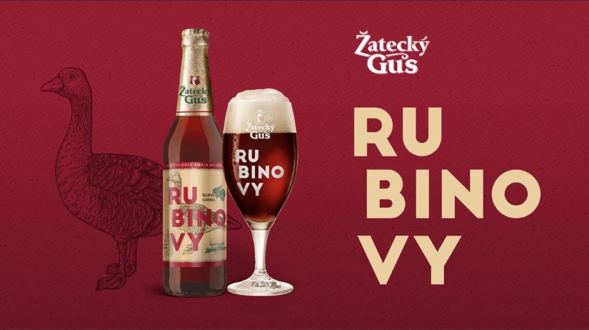

по заводу бродит гусь
- клиент
- ПК «Балтика»
- отрасль
- напитки
- формат
- event · брендинг завода
задача
новый сорт показали сотрудникам первыми
идея
фирменный шрифт восстановили по ключевому визуалу и пустили гуся гулять: лапки на полу указывали дорогу к дегустации
